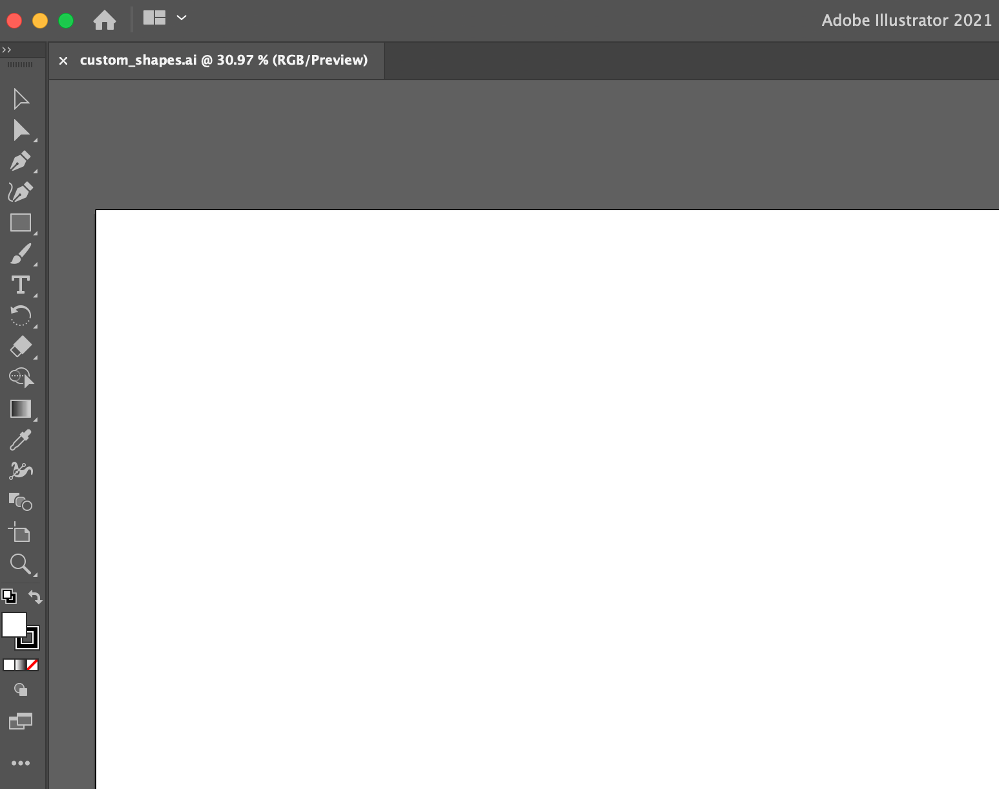
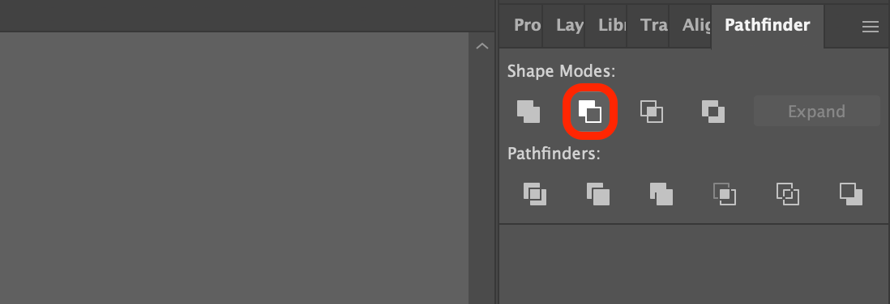
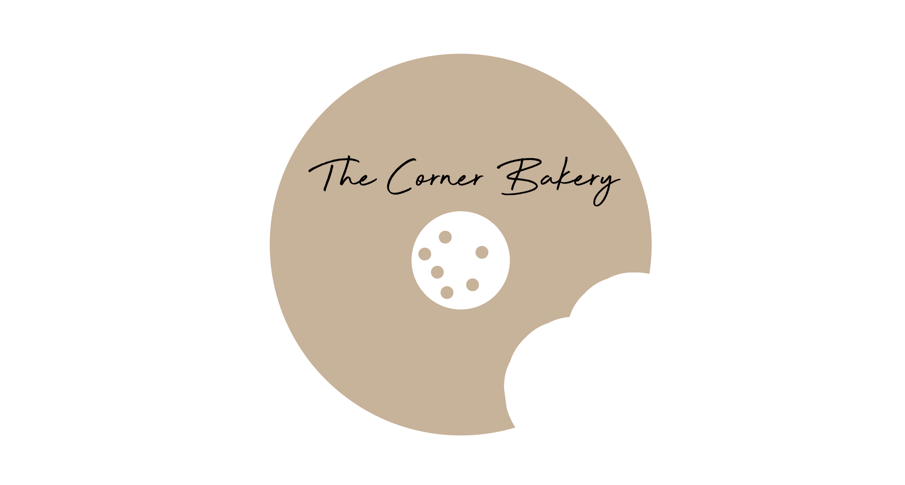

Step 1: Open Adobe Illustrator & Name Your Project
Open Adobe Illustrator. Then, name your Adobe Illustrator project "custom_shapes.ai":

Step 2: Open The Pathfinder Panel
Go to "Window" in Illustrator’s top menu, and make sure that "Pathfinder" is selected; once selected, the Pathfinder panel will be visible within your project.

Step 3: Create A Compound Shape & Use The Minus Front Shape Mode
Create the below logo (Open Step 4), or at least a similarly designed logo, using circular shapes; select all circular shapes to create a Compound Shape, and subtract from this Compound Shape utilizing the Minus Front Shape Mode (circled in the right screenshot).

Step 4: Create A Negative Space Logo
Create a negative space logo like this one:
